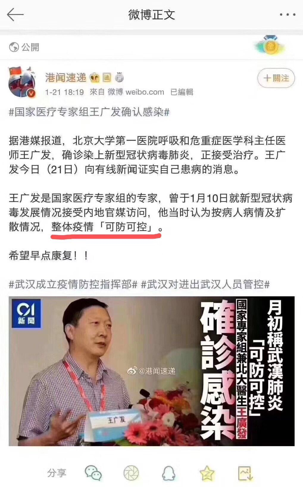
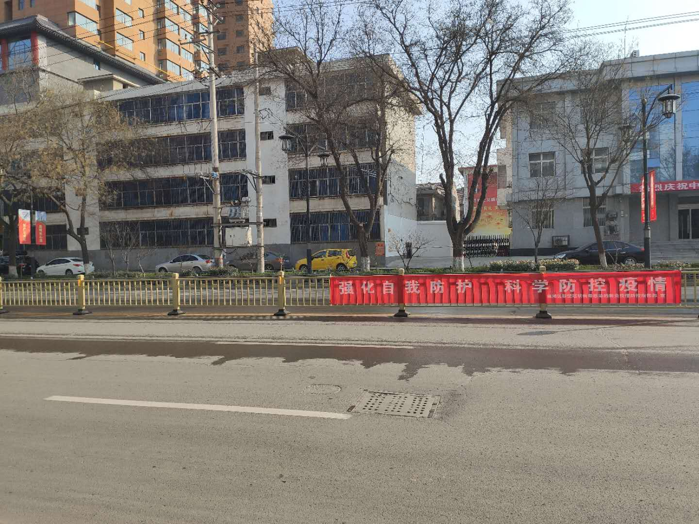
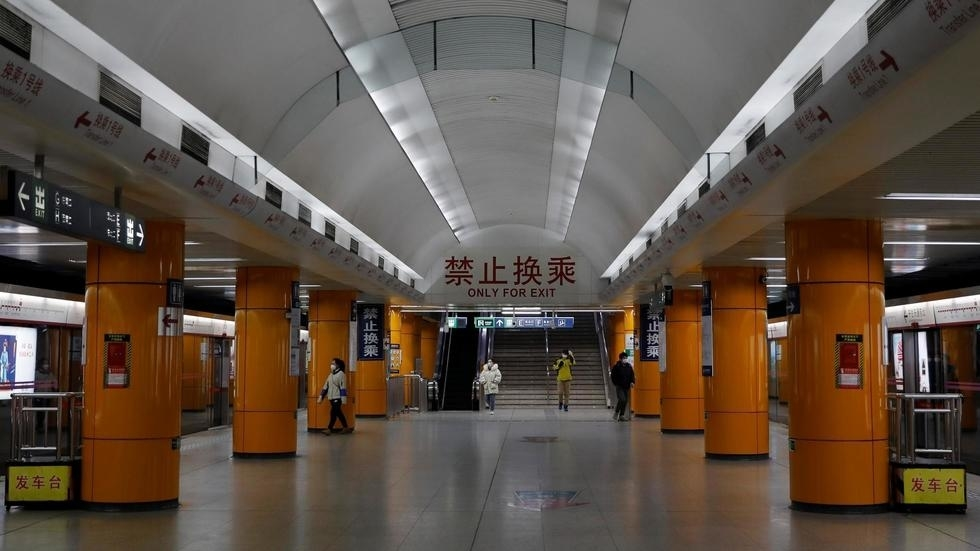
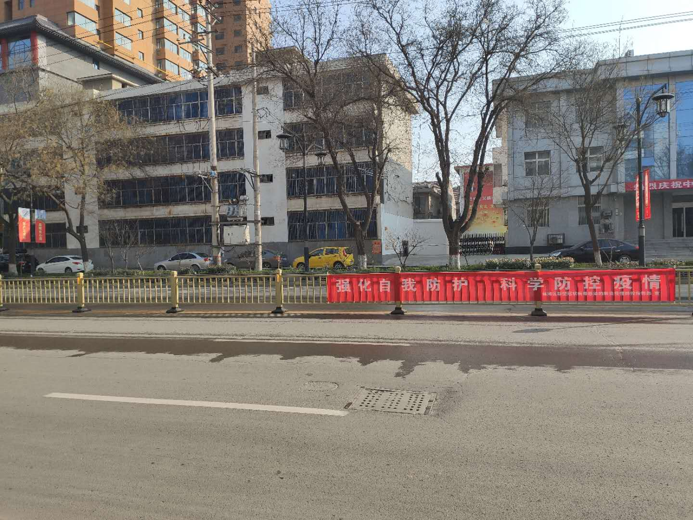
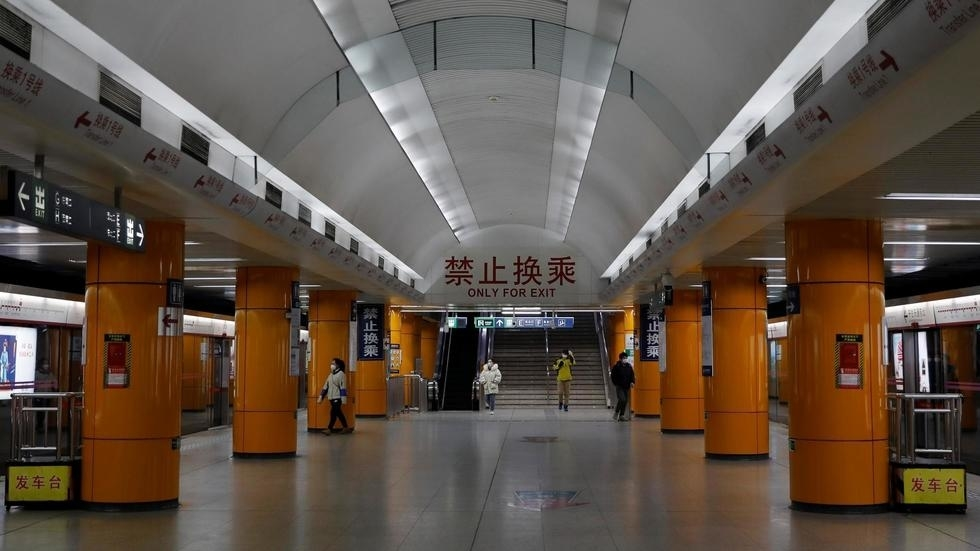
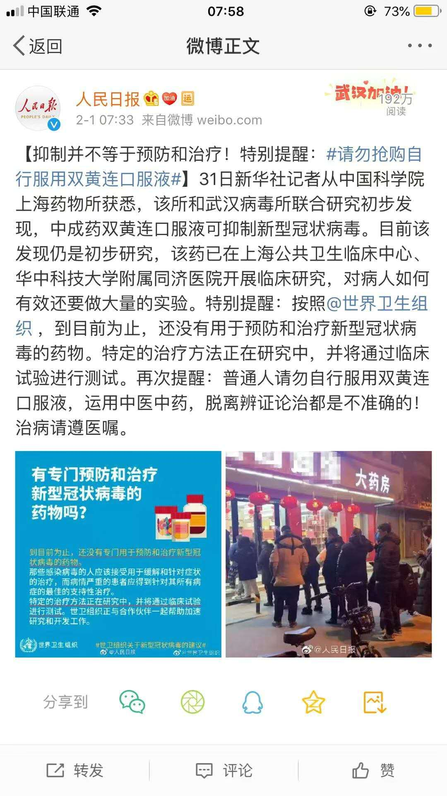
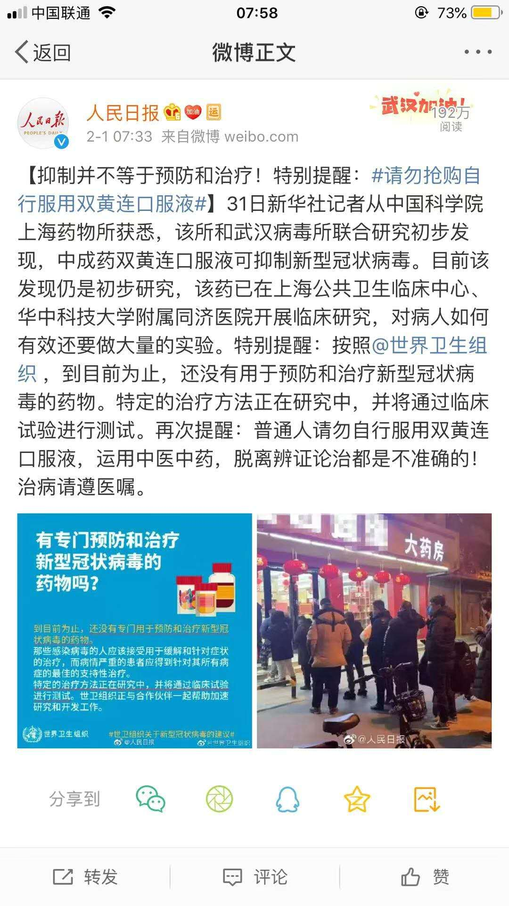

记录我看到的武汉疫情
若干年后，曾经历过这场灾难的人们，我会用怎样的方式来讲述这个恐慌的春节？对于那些没有经历过的人们。
最好的记录方式也许是按照时间线梳理短短半个月翻天覆地的变化。不过在这之前我想先回想一下我的“SARS”经历。
SARS
2003年的“SARS”我10岁，现在保留的印象并不深刻，记忆中模糊的是几个片段：在家跟着教育台一起学习；出入大门时需要绿底黑字带小夹子的出入证才行；挥之不去的消毒水味；中间去了趟小学，数学马老师骑着踏板摩托过来给大家布置作业，拿上就回去，不记得是否带了口罩；我妈说的跳绳/羽毛球运动/电视上是否每天播报感染人数，我都记不得了，偶尔瞥向大门外的街道也是稀稀落落的车。其他什么都记不得了。回忆下“SARS”，让我回忆到了那时童真的想法，社会的停摆，紧张的气氛。
疫情的大背景
2019年是个什么样的大背景呢？
- 外在是中美关系正是破裂，贸易战如火如荼，即便是每次谈判的风声也会在A股引来一场风波，而美股坚如磐石，不断高攀，18年喊的小打小赢大打大赢的声音也渐渐没有了，都逐渐认清了中美双方实力对比。中国由于产业链外移压力大，猪肉导致的CPI高涨，经济下行压力大，主动寻求签第一阶段协议(购买美国农产品，保护知识产权等)
- 香港方面，“反送中”运动持续了半年的时间，香港人的诉求被一拖再拖，200W人上街游行，黑警干扰执法，香港人街头运动此起彼伏，立法院本地民主派大获全胜，大陆不断抹黑孤立打压香港民主势力，大陆高持续升温，驻港部队喊话等等，基本宣告香港政策失败，全面对刚大陆。
- 台湾方面，因为香港的前车之鉴，一国两制失去阵地，亲大陆完全没有市场，韩国俞被蔡英文翻转，台湾民意基础基本丧失。
- 国内由于贸易战出口受阻，地方政府财政危机，房地产和投资断崖下滑，民众本身没钱消费也捉襟见肘，经济下行压力巨大，同时因为执拗的从俄罗斯进口猪肉引发了蔓延全国的猪瘟，猪肉从最便宜时候的7 8 块钱到了30多块钱，引发的通货膨胀明显。小城市越发没有工作机会，百业凋敝，房地产被政府冷冻，新房到手能卖的状态基本要7 8 年(房产证到手3 4年，5年后才能卖)。
- 城市方面，二线城市经历过17 18年大涨，19年较为平稳，许多人选择去了杭州南京成都武汉等地。北京从17年大火后清理低端人口，18年拆除违建，19年拆小产权房，北上广深基本都是严控人口。
- 社会矛盾比较激化，民航总院杀医案，患者家属直接割喉医生，影响极其恶劣，医患矛盾巨大，医生工作强度高收入低，患者缴费多，交黑心钱等问题很多。
- 举行了又一次的阅兵，10月1日的阅兵天气特别差，能见度低，同时安保极其严格，清场范围大，提前半个月限制外地车进京，关闭所有夜间场所，建国门到复兴门附近所有的高楼窗户都贴上了反光膜，都有人监督。场面大，装备多，结束阅兵后晚上还有晚会。
整体来说内外交困。
暴风前的平静
1月初，从各类信息源听到武汉有传染病，但是我并没有很重视，因为每天都有海量的新闻，很难断定哪个影响巨大。大概半个月前北京有几个内蒙人去朝阳医院看鼠疫，引发了不小震动，但是很快就扑灭了。所以这个武汉肺炎的消息并没有很当回事。大概是快过年回家了(1.25过年，1.22晚上走的)，
1.17/8左右，各方面对于这个消息不断报道，最让人起疑心的是日本/泰国/香港/新加坡等地都发现了疫情，但是武汉还没有新增的病例，非常反常识，接着又有新闻说这个和sars很像，传染力惊人，这个时候我就比较关注这个事情了，但到这个时候武汉还没有相关疫情信息，各地也没有防护措施，老家也没人戴口罩，觉得比较远。
1.20/21感觉风声越来越紧，各地都不断报道有人感染，之前的医疗组组长(王广发，说可防可控)感染，钟南山去武汉当组长，很多地方的口罩都被扫荡，我也开始戴口罩，家里放了一包。22号上火车戴了两层口罩，地铁/火车车厢内部大多数戴口罩。中途转车省会基本没人戴口罩。
1.23到家，小地方基本没人带口罩，都是看新闻觉得挺厉害，小地方受不到影响。由于第一年，当天就走了一遍亲戚。戴口罩被说怕死鬼，胆小。
暴风骤起
1.24大年三十，形势陡然严峻起来，武汉封城，很多武汉人逃离武汉，建立雷神山医院(类似03年小汤山)，许多医院开始求助物资。家里也确定初一不聚餐，市委也下发了管理文件。看春晚的时候偶尔吐槽一下。部队医院派了人去武汉支援。
1.25这时候就在家中做饭吃，没有出门，时刻关注疫情。
后续几天不断升温，全国口罩断货，然后各网站都出了各地疫情统计数据，武汉数据都被人怀疑造假，但是被封城管控没人知道真实数字。刚开始每天增加几百个。后来就是每天2000多的增加。基本初五就破了当年非典5000人感染的记录。餐厅分餐吃饭，进出都戴口罩，各小区都测体温，给车轮消毒。上班时间推迟到2.3号(初十)。
席卷神州
31号 破万，形势越来越紧张，后面开始就对数字略有麻木。但各地疫情不断告危，医疗物资极度短缺。蔬菜价格上涨。
各地医护人员不断增援武汉，截至2.9大约有1.1W医护人员。

回到北京后也基本窝在家里基本不出门，惊叹于北京地铁几乎无人，北京西站空旷的害怕，第一次发现北京西站真挺大的。
北京相对老家还是比较松，出入小区简单测下手腕温度.当天下了大雪，美丽的雪景，肆虐的疫情。只能在家做饭吃。
只能静待好转。
乱象频出
遥遥领先的预言
甩锅蝙蝠
可防可控
封城封村封小区
 



红十字截留
压价收购口罩
双黄连骗局
 

武汉病毒所
2.10
X露面
钟南山说最长潜伏期24天
武汉今天才进行小区封闭，而外地基本两周前就开始了。
全国对于租户极不友好，很多地方都不让进，滞留两地，睡在救助站；下不了高速，陕煤几百人在休息站滞留。各地不断放大政策，十堰实施战时状态。
2.13
湖北和武汉的书记都换掉，还是X的人，然后就把之前存量病患数据放出来，一下就增加了15000人。
拒绝世界卫生组织和美国调查团来China。